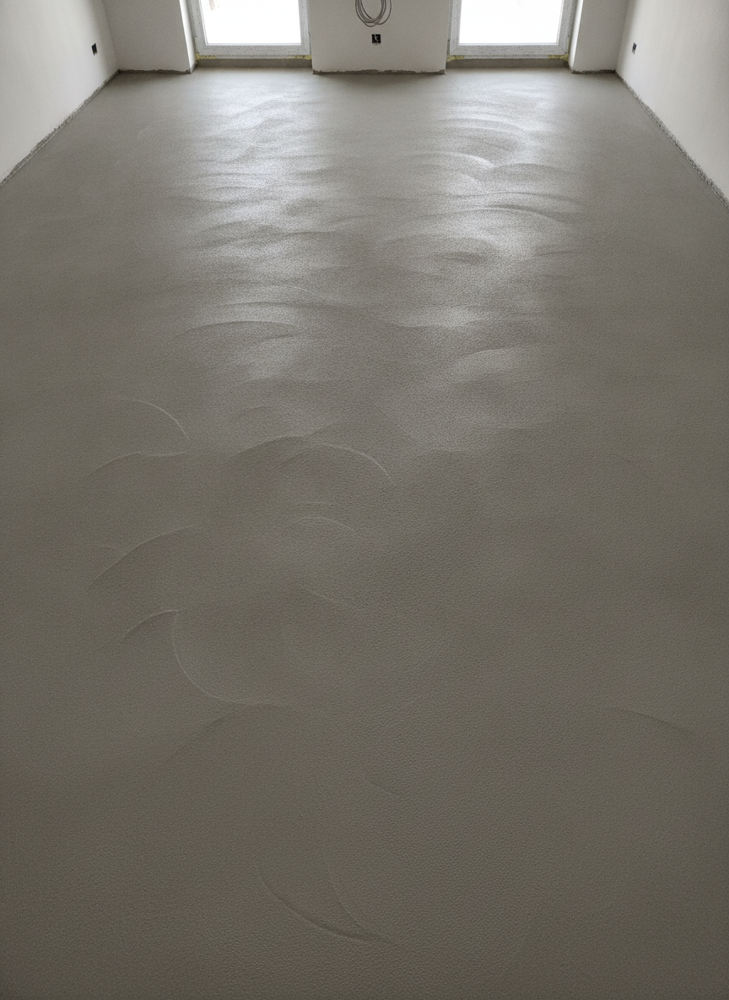
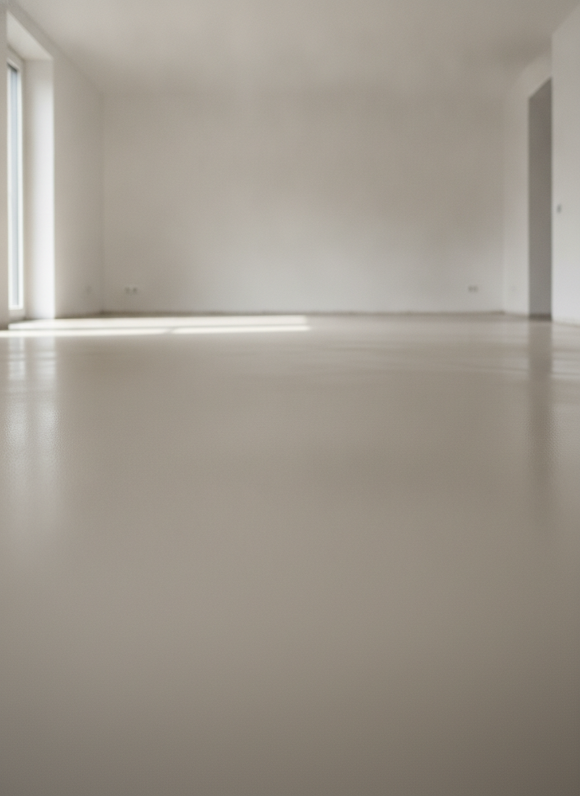
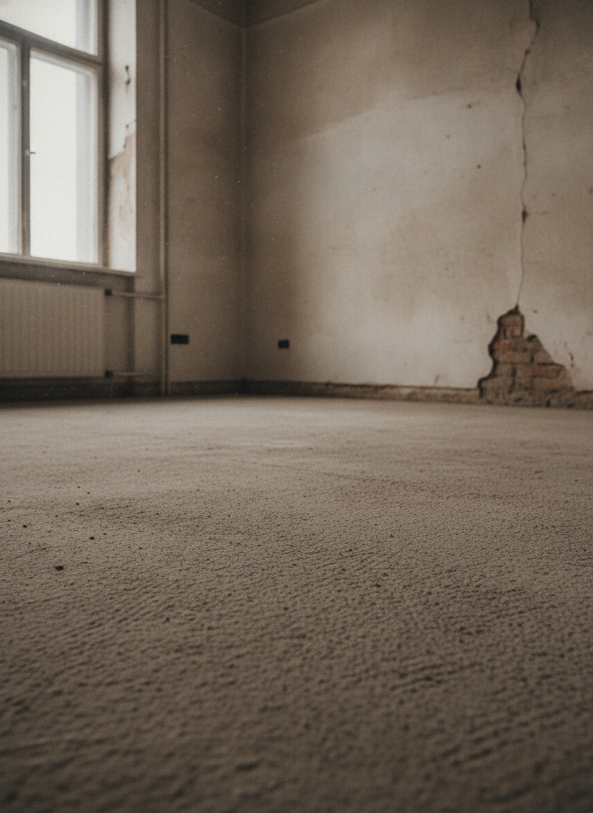
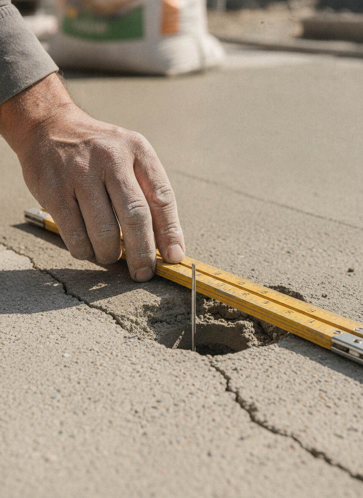
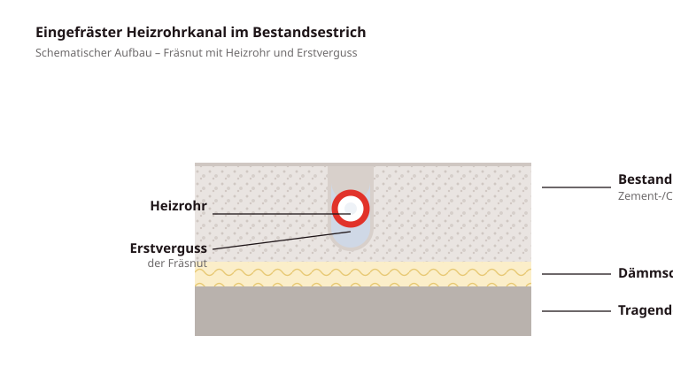

Fußbodenheizung fräsen
Die Krotzer & Eisele GmbH bietet eine handwerklich präzise Lösung zur Nachrüstung von Fußbodenheizungen im Bestandsbau. Mit spezieller Frästechnik werden Heizrohrkanäle in den vorhandenen Estrich eingefräst, die Heizrohre eingelegt, die Nuten im Erstverguss verschlossen und die Leitungen auf Dichtheit geprüft.
Das Fräsverfahren eignet sich für Sanierungen, Modernisierungen und Altbauten, bei denen eine Fußbodenheizung nachgerüstet werden soll, ohne den vorhandenen Estrich vollständig zu entfernen.
Statt eines kompletten Neuaufbaus werden schmale Heizrohrkanäle in den geeigneten Bestandsestrich eingefräst. So bleibt die geringe Aufbauhöhe erhalten und die Modernisierung lässt sich zügig und staubarm umsetzen.
- Geringe Aufbauhöhe
- Staubarme Frästechnik mit Absaugung
- Fachgerechte Rohrverlegung
- Dichtheitsprüfung vor Übergabe
Geeignete Bestandsestriche
Das Verfahren konzentriert sich auf mineralische Bestandsestriche (Zement- und Calciumsulfat-/Anhydritestrich). Eine eingefräste Fußbodenheizung ist nicht bei jedem Bodenaufbau automatisch möglich – Estrichart, Estrichdicke und Tragfähigkeit werden vorab geprüft.




Unsere Arbeitsschritte
Beratung & Prüfung
Prüfung der örtlichen Gegebenheiten und Abstimmung der Fräsflächen vor Beginn der Arbeiten.
Fräsen der Rohrkanäle
Mit spezieller Frästechnik bringen wir die Rohrkanäle staubarm in den Estrich ein.
Reinigung der Fräsnuten
Absaugen und Reinigen der Kanäle, damit die Heizrohre sauber eingelegt werden können.
Verlegung der Heizrohre
Einlegen der Heizrohre in die gefrästen Kanäle nach abgestimmtem Fräsbild.
Dichtheitsprüfung
Prüfung der verlegten Leitungen auf Dichtheit vor den weiteren Arbeitsschritten.
Erstverguss der Fräsnuten
Verschließen der Nuten im Erstverguss; weitere Spachtel- und Belagsarbeiten erfolgen gesondert.

So sitzt das Heizrohr im Estrich
In den Bestandsestrich werden schmale Kanäle eingefräst (im Verfahren üblich ca. 15 mm breit und rund 16 mm tief), in die das Heizrohr eingelegt wird.
Anschließend werden die Fräsnuten im Erstverguss verschlossen. Randbereiche und Estrichfelder werden bei der Festlegung der Fräsflächen berücksichtigt.
Fußbodenheizung nachrüsten – fragen Sie uns an
Senden Sie uns Fotos, Angaben zur Fläche und – falls vorhanden – einen Grundriss. Je genauer die Angaben, desto besser lässt sich die Ausführbarkeit vorab einschätzen.